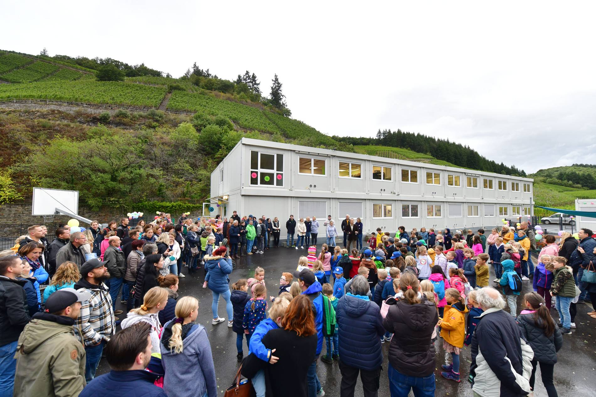

Meine Projekte

Sozialpraktikum an der GS Dernau
Im Januar 2023 habe ich mein schulisches Sozialpraktikum an der St. Martin Grundschule in Dernau absolviert. Dazu habe ich einen ausführlichen Praktikumsbericht geschrieben, in dem die Einrichtung, der Tagesablauf und meine persönlichen Erfahrungen genauer beschrieben werden.
alöksdjflkj
alöksdjflkj
alöksdjflkj